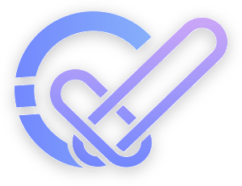

Web UI
Run, triage, and export reports from a local audit workspace.

This page works on mobile, but the product mockups and report preview are easier to inspect on a desktop screen.
Hybrid Solidity auditing
Security tools often force auditors to choose between deeper execution and overwhelming noise. Chainvet reduces that friction by combining static detectors, symbolic path reasoning, and runtime fuzzing into one unified finding workflow.
Ecosystem
Use Chainvet from the local Web UI, the VS Code extension, or the CLI while keeping the same hybrid analysis and report workflow.
Run, triage, and export reports from a local audit workspace.
Inspect findings next to the Solidity file you are already editing.
Use the same hybrid engine in scripts, CI jobs, and repeatable audits.
Design Comparison
Smart contract scanners often trade depth, compiler compatibility, runtime cost, or finding structure against each other. This section shows the product choices Chainvet makes to reduce those tradeoffs.
Pipeline
Our engine runs multiple verification layers in a single pass. When compiler configurations fail, a robust AI fallback parser continues scanning automatically to prevent workflow interruptions.
Chainvet starts with Solidity structure, compiler metadata, and fallback parsing so later checks have a consistent view of contracts and functions.
frontend: Solidity structure
fallback: parser hints
output: normalized contractsCI/CD Integration
Add security checks to push and pull request pipelines so findings are visible before deployment.
# .github/workflows/audit.yml
name: Security Audit
on: [push, pull_request]
jobs:
chainvet:
runs-on: ubuntu-latest
steps:
- uses: actions/checkout@v4
- run: cargo build --release
- run: chainvet --hybrid ./contracts --report pdfGenerated reports
Export audit logs with finding context, exploit explanations, Solidity proof-of-concept snippets, and remediation guidance for review.
If the embedded viewer is unavailable, open the generated report PDF.
Hybrid audit workflow